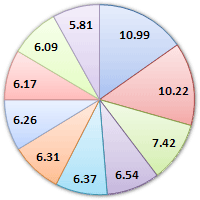
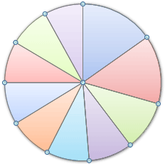
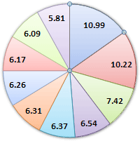
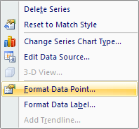
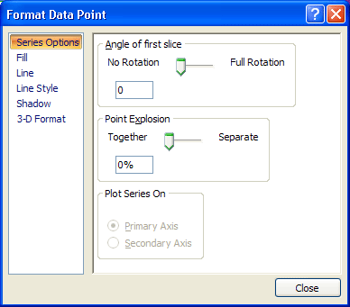
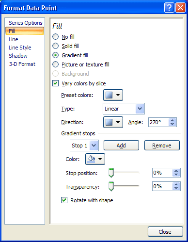
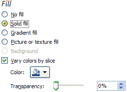
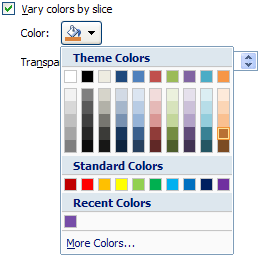
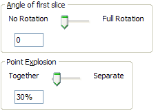
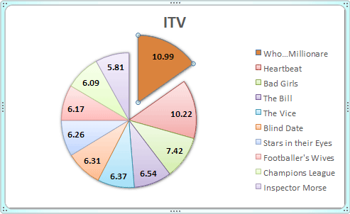

Free
computer Tutorials
|
Free
computer Tutorials
|
|
 HOME HOME
|
|
||||
Microsoft Excel 2007 to 2010How to Format Pie Chart segmentsFrom the previous lesson, your Pie Chart segements look like this:  You can change the colour of each slice of your pie chart, and even move a slice. Let's change the colours first.
Change the Colour of a Pie Chart SegementLeft click on the pie chart itself to select it:  It is selected when you can see those round handles. Now left click on one of the segments to select just that individual slice. It's a little bit tricky, but if you do it right your pie chart should look like this:  In the image above, only the 10.99 segment is selected. You should see round circles surrounding just that segment. Now right click your segment and, from the menu that appears, select Format Data Point:  You should see the following dialogue box appears:  Click on Fill from the options on the left. The dialogue box changes to this:  There are quite a lot of options to experiment with. But select the Solid Fill option:  Now click the colour picker, and choose a new colour for the segment:  We've gone for a dark orange colour, but select any colour you like.
Move a Pie Chart Segement in ExcelTo move the slice that you've just coloured, click back on Series Options from the options on the left: Set the Point Explosion slider to about 30%  Now click the Close button. Your chart should look something like this one:  Change the rest of the slices in exactly the same way. You can format the rest of the chart exactly like you did for the Bar chart. But it looks quite impressive as it is!
In the next part, we'll look at our third and final chart style - a
2D Line Chart. |
|||||
|